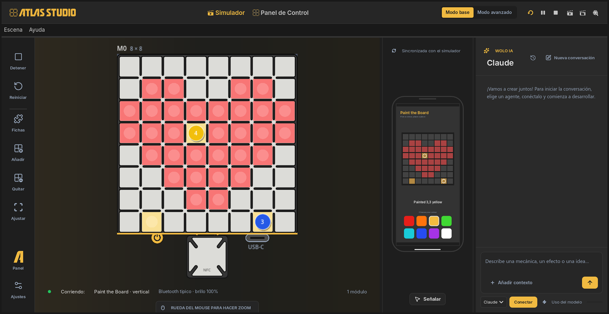
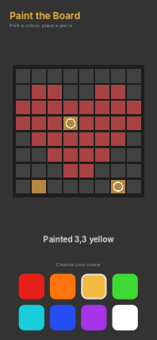
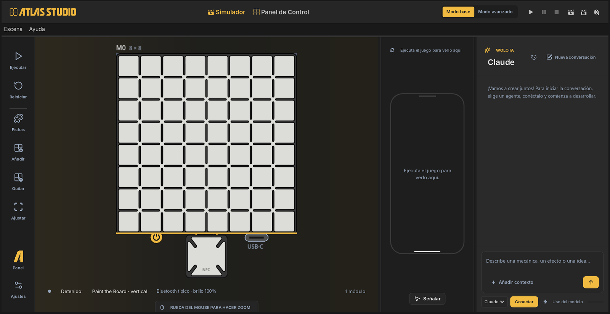
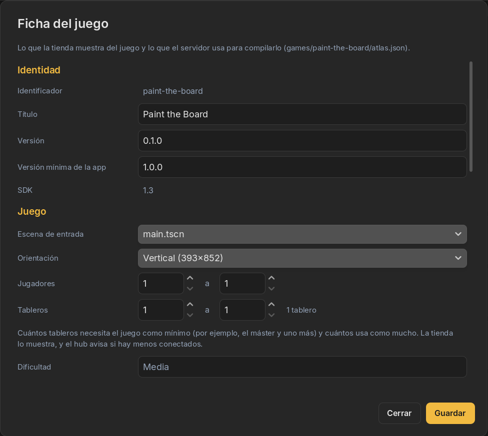

01Qué vamos a hacer
Paint the Board es casi el juego más chico posible que igual usa todo lo que tiene Atlas: la pantalla del teléfono, las luces y las fichas.
- El teléfono muestra 8 botones de colores. Elegís uno.
- Apoyás cualquier ficha en cualquier casilla y la casilla se ilumina de ese color.
- Levantás la ficha y la casilla queda pintada.


Necesitás Atlas Studio instalado y un agente de IA conectado; los dos están en la guía 2. No hace falta un Atlas 64: todo pasa en el Simulador.
02Creá el proyecto
-
Agregá un proyecto
En la pantalla de inicio, tocá Agregar proyecto → Nuevo juego. En Empezar desde, dejá Juego vacío.
-
Ponele nombre y elegí la orientación
Título:
Paint the Board. El Identificador se completa solo comopaint-the-board: es la carpeta del juego y su nombre en la tienda. Orientación: Vertical (393×852). Tocá Crear. -
Se abre en el Simulador
Un juego nuevo no viene vacío: trae un punto de partida que ya funciona. Tocá Ejecutar y arrastrá una ficha desde Fichas al tablero: la casilla se enciende mientras la ficha está y se apaga cuando la sacás. Eso es justo lo que vamos a cambiar.

El proyecto nuevo, antes de ejecutarlo.
03Pedíselo al agente
-
Conectá tu agente
En el chat WOLO IA, elegí tu agente y tocá Conectar. Si es la primera vez, la guía 2 te acompaña.
-
Pegá este mensaje
Describí el juego como se lo explicarías a un amigo: qué hay en la pantalla, qué pasa en el tablero y cómo te vas a dar cuenta de que anda.
Mensaje para el agenteHagamos un juego que se llama Paint the Board, para un módulo. En la pantalla del teléfono: el título, un dibujo chico del tablero y 8 botones de colores (rojo, naranja, amarillo, verde, celeste, azul, violeta, blanco). El color elegido tiene un borde blanco. En el tablero: cuando se apoya una ficha en una casilla, esa casilla se ilumina con el color elegido. Cuando se levanta la ficha, la casilla queda pintada. Una ficha sobre una casilla pintada la vuelve a pintar con el color actual. Usá un brillo que se vea aunque el tablero tenga el brillo bajo. Cuando termines, probalo en el Simulador: pintá algunas casillas, levantá las fichas, cambiá de color y contame cómo salió.
-
Dejalo trabajar
El agente lee el proyecto, cambia la pantalla y la lógica del juego, lo revisa con las reglas de la plataforma, lo ejecuta en el Simulador, apoya fichas solo para probarlo y después te cuenta qué hizo, con palabras simples. Mientras trabaja, vas a ver cambiar el tablero y el teléfono.
Captura pendienteEl chat WOLO IA con la respuesta del agente después de armar Paint the Board
No empieces de nuevo: decí qué está mal. “Los botones de colores son muy chicos”, “al levantar la ficha la casilla se apaga, tiene que quedar”. Si es algo que se ve, tocá Señalar y hacé clic ahí primero.
04Jugalo
Ahora probalo vos, como lo haría un jugador:
- Arrastrá una ficha desde Fichas a una casilla. Se ilumina de rojo, el primer color.
- Sacá la ficha del tablero arrastrándola, o con clic derecho. La casilla sigue roja.
- Tocá el botón azul en el teléfono. Apoyá una ficha en la misma casilla: se pone azul.
- Dejá una ficha apoyada y pintá alrededor. Las fichas y la pintura conviven.
Después pintá algo. El corazón de la captura son 30 casillas, unos dos minutos de apoyar y levantar.
05Completá la ficha del juego
Todo lo que la tienda va a mostrar de tu juego está en la Ficha del Juego, en la pestaña Panel de Control. Conviene completarla ahora, con la idea fresca:

- Título y Versión: dejá 0.1.0 hasta que publiques.
- Jugadores y Tableros: de 1 a 1 en este caso. Un juego para mesas más grandes pone el mínimo que necesita y el máximo que usa.
- Descripción y hasta tres categorías de la lista de la tienda.
- Portadas: una vertical de 320 × 440 y, si querés, una apaisada. Studio pone una provisoria hasta que cargues la tuya.
Tocá Guardar. Todavía no va nada a la tienda; eso pasa en la guía 6.
06Seguí
Cada una de estas es un mensaje más para el agente. Mandá uno, probalo, y después el siguiente.
Agregá un botón “Borrar” debajo de los colores que apague todas las casillas del tablero.
Agregá un noveno botón, la goma. Con la goma elegida, apoyar una ficha en una casilla la apaga.
Cuando las 64 casillas estén pintadas, mostrá la pantalla de fin de partida con cuánto tardé, y dejame jugar de nuevo.
Con esa última ya es un juego: un objetivo, una medida y un motivo para volver a intentarlo. Próxima guía: cómo dejar que el agente pruebe todo esto por vos.
07Por dentro
No hace falta que leas esto. Pero si tenés curiosidad, esta es toda la lógica de Paint the Board, tal como quedó. La pantalla (título, espejo del tablero, botones) está en otro archivo, una escena que el editor de Studio muestra de forma visual.
Ver main.gd (70 líneas)
Tres cosas para mirar: la paleta de 16 colores que se manda al tablero, los botones de colores que llaman a _select, y _on_piece_placed, que pinta la casilla. No hay código para cuando se levanta una ficha: no hacer nada es lo que deja la casilla pintada.
extends Control
## Paint the Board
##
## Pick a colour on the screen; every piece placed on the board paints its cell with that colour.
## Lifting the piece leaves the cell painted.
## Palette index 0 is "off". Indexes 1-8 are the colours the player can pick.
const PALETTE_COLORS: Array[Color] = [
Color(0.0, 0.0, 0.0), # 0 off
Color(0.90, 0.12, 0.10), # 1 red
Color(1.00, 0.45, 0.05), # 2 orange
Color(0.95, 0.73, 0.25), # 3 yellow
Color(0.25, 0.85, 0.20), # 4 green
Color(0.10, 0.80, 0.85), # 5 cyan
Color(0.15, 0.30, 0.95), # 6 blue
Color(0.65, 0.20, 0.90), # 7 purple
Color(1.00, 1.00, 1.00), # 8 white
]
const COLOR_NAMES := ["", "Red", "Orange", "Yellow", "Green", "Cyan", "Blue", "Purple", "White"]
## Brightness 0-15. 8 or more stays visible even when the player dims the board.
const BRIGHT := 12
var _selected := 1
@onready var _status: Label = %Status
@onready var _swatches: GridContainer = %Swatches
func _ready() -> void:
var palette: Array = PALETTE_COLORS.duplicate()
palette.resize(16)
for i in range(PALETTE_COLORS.size(), 16):
palette[i] = Color.BLACK
Atlas.board.set_palette(palette)
for i in _swatches.get_child_count():
var swatch: Button = _swatches.get_child(i)
swatch.pressed.connect(_select.bind(i + 1))
Atlas.pieces.placed.connect(_on_piece_placed)
await Atlas.board.refresh_modules()
Atlas.board.clear()
_select(1)
func _select(index: int) -> void:
_selected = index
for i in _swatches.get_child_count():
_style_swatch(_swatches.get_child(i), i + 1 == index, PALETTE_COLORS[i + 1])
_show("Colour: %s. Place a piece on any cell." % COLOR_NAMES[index])
func _on_piece_placed(module: int, cell: Vector2i, _global_cell: Vector2i) -> void:
Atlas.board.set_pixel(module, cell.x, cell.y, _selected, BRIGHT)
_show("Painted %d,%d %s" % [cell.x, cell.y, COLOR_NAMES[_selected].to_lower()])
func _style_swatch(swatch: Button, selected: bool, color: Color) -> void:
var box := StyleBoxFlat.new()
box.bg_color = color
box.set_corner_radius_all(14)
box.set_border_width_all(4 if selected else 0)
box.border_color = Atlas.ui.color(&"text")
for state in ["normal", "hover", "pressed", "focus"]:
swatch.add_theme_stylebox_override(state, box)
func _show(text: String) -> void:
_status.text = text
print(text)